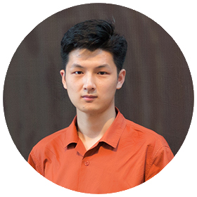

|
Xinge Yang (杨辛格)
I am a Member of Technical Staff at OpenAI. I received my Ph.D. from KAUST, where I worked with
Prof. Wolfgang Heidrich in the Computational
Imaging Group. My Ph.D. research focused on two directions: (1) AI for optics, developing
differentiable simulation and automated optimization to design optical systems, and (2)
computational imaging, building computational cameras by co-designing optics with neural
networks.
My Ph.D. research advanced differentiable optics by establishing a complete simulation
framework covering ray tracing, coherent and polarization simulation, sequential and non-sequential
optical models, and ray–wave optics conversion. My representative
work, published in Nature Communications, proposes
automated lens design via differentiable optimization. These efforts have been released as DeepLens, an open-source differentiable
optical simulator integrating optics, sensors, and image processing for end-to-end imaging system
design.
Email /
Google Scholar
/
GitHub /
LinkedIn /
知乎
|

|
Work Experience
- 08/2026 – present: Member of Technical Staff, OpenAI.
- 07/2024 – 11/2024: Research Scientist Intern, XR Tech Camera &
Sensing, Meta Reality Labs.
- 10/2023 – 01/2024: Research Scientist Intern, Optics & Display
Research, Meta Reality Labs.
|
Education
- 2020 – 2026: M.Sc./Ph.D. in Computer Science, KAUST, Saudi Arabia.
- 2016 – 2020: B.Sc. in Physics (major) and Computer Science (minor),
USTC, China.
|
Research
My research develops AI methods for optics and uses them to build new imaging hardware:
- AI for Optics: differentiable optical simulation, automated design algorithms, high-performance computing for optical simulation, and agentic workflows for optical design.
- AI Imaging Hardware: next-generation cameras built by co-designing optics and algorithms, including end-to-end simulation of optics, sensor, and ISP, high-fidelity synthetic data that bridges the sim-to-real gap, and efficient on-device algorithms.
|
Open Source
|
|
|
AI4Optics
I summarize my PhD work on AI4Optics, with a mission to automate optical system design with AI agents and high-performance differentiable optics.
- AI-native Optical Simulators: high-performance optical simulators built for LLM agents
- Computational Imaging Applications: optical simulation combined with neural
reconstruction.
- AI Optical Design Software: AI-powered optical design in the browser with a built-in AI
design assistant (DeepO).
|
Publications
|
|
|
End-to-end differentiable design of geometric waveguide displays
Xinge Yang, Zhaocheng Liu, Zhaoyu Nie, Qingyuan Fan, Jim Bonar, Wolfgang Heidrich
arXiv preprint 2026.
Paper (arXiv)
- Differentiable Monte Carlo non-sequential polarization ray tracing for geometric waveguide
display coating optimization with up to a thousand layers.
|
|
|
Task-Driven Lens Design
Xinge Yang, Qiang Fu, Yunfeng Nie, Wolfgang Heidrich
Optics Express 2026. Paper (arXiv) / Paper (PDF) / Supp
(PDF)
- Task-driven lens design objective using a well-trained network to improve computer vision performance (image classification, object detection, and vision-language models).
|
|
|
Efficient Depth- and Spatially-Varying Image Simulation for Defocus Deblur
Xinge Yang, Chuong Nguyen, Wenbin Wang, Kaizhang Kang, Wolfgang Heidrich, Ginger Li
ICCV Workshop 2025.
Paper
(CVF) / Paper
(PDF) / Supp
(PDF)
- Efficient and high-fidelity synthetic dataset generation for denoising and defocus deblurring without fine-tuning.
|
|
|
Aberration-Aware Depth-from-Focus
Xinge Yang, Qiang Fu, Mohamed Elhoseiny, Wolfgang Heidrich
TPAMI 2025. Paper (IEEE) /
Paper (PDF) / Supp
(PDF) / Project page / Code
- Efficient and high-fidelity synthetic dataset generation with neural PSF representation for depth estimation from defocus stacks.
|
|
|
End-to-End Hybrid Refractive-Diffractive Lens Design with Differentiable Ray-Wave Model
Xinge Yang, Matheus Souza, Kunyi Wang, Praneeth Chakravarthula, Qiang Fu, Wolfgang Heidrich
SIGGRAPH Asia 2024. Paper (ACM) / Paper (PDF) / Supp
(PDF)
- Differentiable ray-wave optical model for hybrid refractive-diffractive lens design with two camera prototypes (extended depth of field and wide field of view).
|
|
|
Curriculum Learning for ab initio Deep Learned Refractive Optics
Xinge Yang, Qiang Fu, Wolfgang Heidrich
Nature Communications 2024. Paper
(Nature) / Paper (PDF) / Supp (PDF) / Code / Video
- Automated lens design from scratch with differentiable ray tracing and curriculum-based deep learning optimization.
|
|
|
Tolerance-Aware Deep Optics
Jun Dai, Liqun Chen, Xinge Yang, Yuyao Hu, Jinwei Gu, Tianfan Xue
arXiv preprint 2025.
Paper (arXiv) /
Project page
- Considering lens manufacturing tolerances in end-to-end lens design for better optical and
computer vision robustness.
|
|
|
End-to-end Optimization of Fluidic Lenses
Mulun Na, Hector Jimenez-Romero, Xinge Yang, Jonathan Klein, Dominik L. Michels, Wolfgang
Heidrich
SIGGRAPH Asia 2024.
Paper
(PDF) /
Project
page
- Differentiable optimization of liquid surface shapes and manufacturing for rapid prototyping.
|
Misc
- Peer review statement: I am pleased to be invited to review papers in my research
field. I will try my best to complete the review within two weeks. I apply the same high
standards to every paper to maximize its potential. However, I do not expect the authors to
address every suggestion I make, and I leave the final judgment to the associate editor.
- Academic collaboration: I am open to collaboration and discussion, especially if my
background in imaging and optics can benefit the project. I will try my best to put
sufficient time into the project. If I simultaneously contribute to the idea, implementation,
and paper writing, I expect to be listed as a co-first author; otherwise, I am comfortable
with any authorship position.
- More about me: I like cats, photography, new technology, and most sports (especially
basketball and water sports). I have lived in China, Singapore, Saudi Arabia, the US, and Finland, and I want
to live in different places to experience the lifestyle of local people. I enjoy adventures
and challenges. I love my life.
|
|